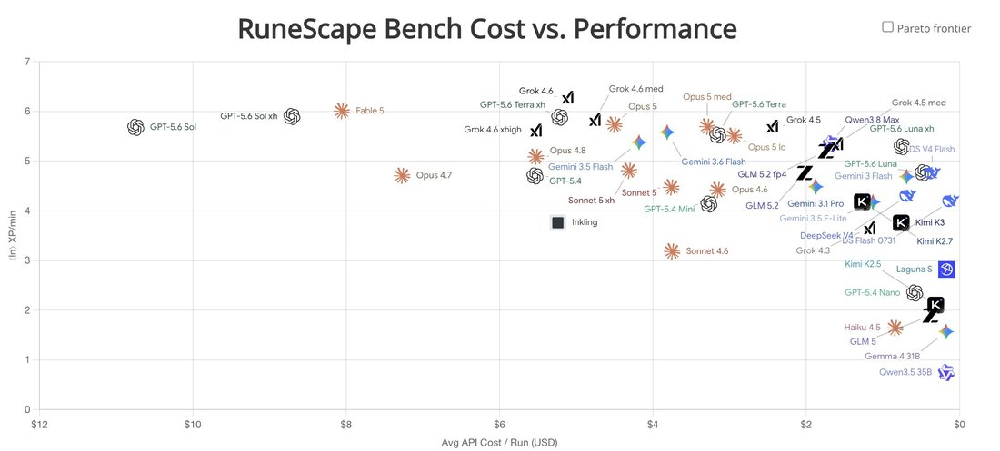

Grok 4.6 makes a ton of tiny tool calls, which means the cost ends up being similar to terra and opus.
Turns out to be a good strategy for tasks where it's hard to plan far ahead, like navigating around Runescape.
Watch some trajectories here: https://t.co/TS5oWr7SXX https://t.co/DSQN1aemPB
Turns out to be a good strategy for tasks where it's hard to plan far ahead, like navigating around Runescape.
Watch some trajectories here: https://t.co/TS5oWr7SXX https://t.co/DSQN1aemPB
